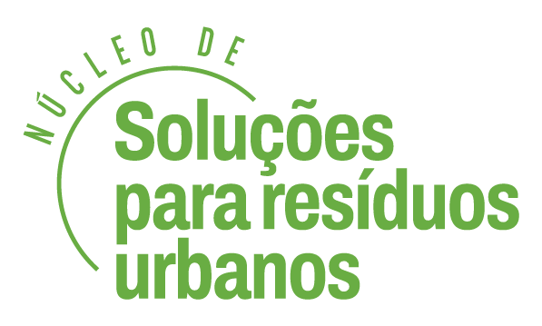

Base local de atuação
O NSRU organiza informação a partir da realidade do território e do trabalho coletivo.
O Núcleo de Soluções para Resíduos Urbanos conecta cooperativas, comunidades, técnicos e gestão pública em uma plataforma voltada à organização territorial, à economia circular e à resposta aos desafios climáticos.
Fortalecimento institucional e apoio à operação.
Leitura local com base em dados, pessoas e contexto.
Conteúdo, acompanhamento e articulação em rede.



O NSRU foi pensado para apoiar a organização do trabalho, o acesso à informação e a articulação entre cooperativas, comunidades e gestão pública.
A proposta do NSRU é organizar conteúdos, indicadores, páginas territoriais e instrumentos de governança em um ambiente digital simples, confiável e útil para o cotidiano dos territórios.
O foco não é apenas mostrar o projeto, mas apoiar a prática: orientar ações, fortalecer redes locais e ampliar a capacidade de resposta diante das mudanças climáticas.

O NSRU organiza informação a partir da realidade do território e do trabalho coletivo.
Cooperativas, técnicos, comunidades e gestão pública passam a compartilhar leitura e ação.
O foco está em materiais, indicadores e fluxos que realmente apoiem o trabalho nos territórios.

O NSRU reúne conteúdos, referências e materiais de apoio que ajudam a fortalecer a triagem, a segurança operacional, a inclusão produtiva e a organização do trabalho cooperativo.
A plataforma valoriza a prática das cooperativas e traduz informação em apoio concreto para a operação e a governança.
Entrar na página de conteúdosOs CRGRs organizam a atuação local em resíduos urbanos, educação ambiental, articulação comunitária e resposta territorial.
O mapa ajuda a visualizar os centros de referência conectados ao NSRU e a relação entre território, cooperativas e organização local.
Rua Seis (Vila Esperança), 113 • Farrapos • Porto Alegre/RS
Região da Bom Jesus / Jardim Carvalho • Porto Alegre/RS
O núcleo se organiza com foco em reciclagem, economia circular, formação e governança territorial.
Referências, instrumentos e conteúdos para apoiar triagem, operação, inclusão produtiva e fortalecimento da cadeia da reciclagem.
Trilhas de aprendizagem, perfis de acesso e instrumentos para apoiar gestão, articulação local e acompanhamento das ações.
Números sintéticos que ajudam a comunicar presença territorial, mobilização e acompanhamento das ações.
Centros pilotos conectados à plataforma.
Cooperativas, técnicos, gestores e parceiros.
Ações e prazos acompanhados no território.
Pontos críticos que pedem atenção e coordenação.
Aqui entram fotos reais do projeto: triagem, reuniões, formações, comunidades, território e atuação das cooperativas.


Respostas rápidas para orientar o uso da plataforma e sua organização territorial.
Indicadores e conteúdos gerais podem ser acessados publicamente. Áreas específicas exigem perfil cadastrado.
Sim. O objetivo é oferecer leitura territorial, monitoramento e apoio à tomada de decisão.
Cooperativas, equipes técnicas, gestores públicos e parceiros vinculados à rede do projeto.
Entre em contato pelo canal institucional do projeto para avaliar conexão com um território ou CRGR.